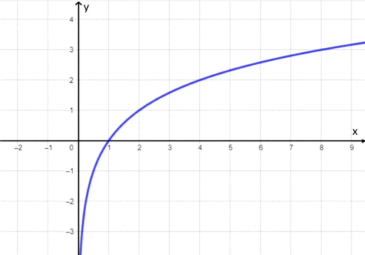

Funções Logarítmicas
A função logarítmica de base a é definida como f (x) = loga x, com a real, positivo e
a ≠
1. A função inversa da função logarítmica é a função exponencial.
O logaritmo de um número é definido como o expoente ao qual se deve elevar a base a para obter o
número x.
Exemplo
- f(x) = logax
- g(x) = log1/3x
- h(x) = log10x = log x
Domínio das funções logarítmicas
O domínio de uma função representa os valores de x onde a função é definida. No caso
da
função logarítmica, devemos levar em consideração as condições de existência do logaritmo.
Portanto, o logaritmando deve ser positivo e a base também deve ser positiva e diferente de 1.
Exemplo
Determine o domínio da função f (x) = log2(x + 3).
Solução
Para encontrar o domínio, devemos considerar que (x + 3) > 0, pela condição de
existência
do logaritmo. Resolvendo essa inequação, temos:
x + 3 > 0 ⇒ x > - 3
Assim, o domínio da função pode ser representado por:
D = {x ∈ R / x > -3}
Gráficos da função logarítmica
De uma forma geral, o gráfico da função y = loga x está localizado no I e IV
quadrantes,
pois a função só é definida para x > 0.
Além disso, a curva da função logarítmica não toca o eixo y e corta o eixo x no ponto de
abscissa
igual a 1, pois y = loga1 = 0, para qualquer valor de a.
Abaixo, apresentamos o esboço do gráfico da função logarítmica.

Função crescente e descrescente
Uma função logarítmica será crescente quando a base a for maior que 1, ou seja, x1 <
x2 ⇔ loga x1 < loga x2. Por exemplo, a função f (x)=log2 x é uma função crescente, pois a
base é igual a 2.
Para verificar que essa função é crescente, atribuímos valores para x na função e calculamos
a
sua imagem. Os valores encontrados estão na tabela abaixo.
Observando a tabela, notamos que quando o valor de x aumenta, a sua imagem também aumenta. Abaixo, representamos o gráfico desta função.
Por sua vez, as funções cujas bases são valores maiores que zero e menores que 1 são
decrescentes, ou seja, x1 < x2 ⇔ loga x1> loga x2. Por exemplo,começar estilo tamanho matemático
14px f parêntese esquerdo x parêntese direito igual a log com 1 meio subscrito fim do
subscrito x fim do estiloé uma função decrescente, pois a base é igual acomeçar estilo
tamanho matemático 14px 1 meio fim do estilo.
Calculamos a imagem de alguns valores de x desta função e o resultado encontra-se na tabela
abaixo:
Notamos que, enquanto os valores de x aumentam, os valores das respectivas imagens
diminuem. Desta forma, constatamos que a funçãocomeçar estilo tamanho matemático 14px f
parêntese esquerdo x parêntese direito igual a log com 1 meio subscrito fim do subscrito x fim
do estiloé uma função decrescente.
Com os valores encontrados na tabela, traçamos o gráfico dessa função. Note que quanto menor o
valor de x, mais perto do zero a curva logarítmica fica, sem contudo, cortar o eixo y.